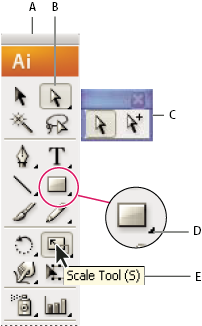

Select a tool
 Do
one of the following:
Do
one of the following:-
Click a tool in the Tools panel. If there is a small triangle at a tool’s lower-right corner, hold down the mouse button to view the hidden tools, and then click the tool you want to select.
-
Hold down Alt (Windows) or Option (Mac OS), and then click a tool to cycle through and select hidden tools.
-
Press the tool’s keyboard shortcut. The keyboard shortcut is displayed in its tool tip. For example, you can select the Move tool by pressing the V key.
 To
hide tool tips, choose Edit > Preferences >
General (Windows) or Illustrator > Preferences >
General (Mac OS), and deselect Show Tool Tips.
To
hide tool tips, choose Edit > Preferences >
General (Windows) or Illustrator > Preferences >
General (Mac OS), and deselect Show Tool Tips.
Selecting a hidden tool
- A.
- Tools panel
- B.
- Active tool
- C.
- Tear off panel with hidden tools
- D.
- Hidden tool triangle
- E.
- Tool name and shortcut